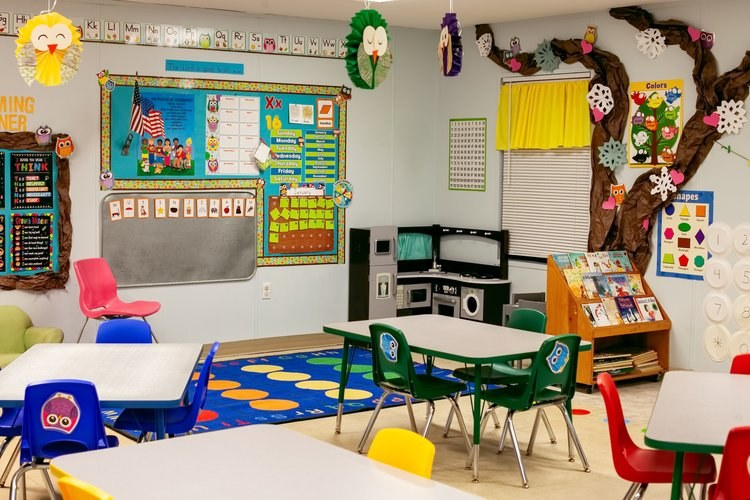
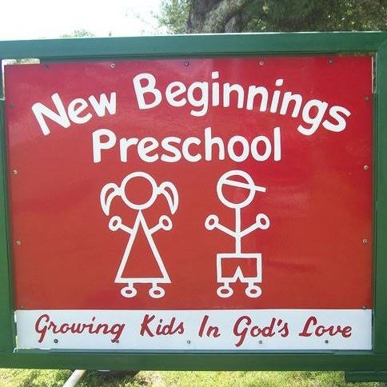

A morning of learning and play at New Beginnings Preschool Center
A Christian preschool in Milton, Florida: creative play, stories, and songs, and learning about the love of God, in a licensed child care facility.
Creative play
Creative play is part of every preschool morning.
Stories
Stories are part of the preschool day.
Songs
Songs are part of the preschool day.
Learning about the love of God
Children learn about the love of God at the Christian preschool.
Gallery


All three photos are real photos from the business's Google Maps listing: the outdoor playground with blue slides and a colorful play structure on wood chips, a classroom with small tables and chairs, alphabet and numbers bulletin boards, owl decorations, a play kitchen, and a book shelf, and the red sign reading New Beginnings Preschool, Growing Kids In God's Love, with stick figures.
Contact
New Beginnings Preschool Center serves Milton, FL. Questions? Call (850) 995-4936.